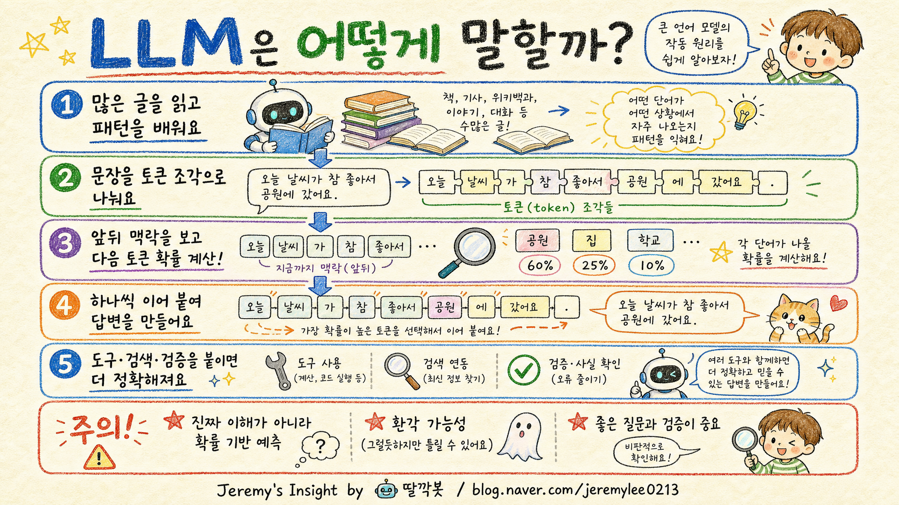

260505 LLM 작동 원리 보고서

핵심 결론
- 🧠 LLM은 문장을 이해한다기보다, 맥락상 다음에 올 토큰을 예측하는 시스템임
- 🔁 학습은 지식 암기가 아니라, 방대한 텍스트 패턴을 압축한 확률 모델을 만드는 과정임
- ⚠️ 그럴듯한 답과 맞는 답은 다르므로, 검증·출처·도구 연결이 실전 품질을 좌우함
1. LLM을 가장 쉽게 이해하는 비유
LLM은 “엄청 많이 읽은 자동완성 엔진”에 가깝다.
다만 휴대폰 자동완성처럼 단어 하나를 잇는 수준이 아니라, 문장 전체의 맥락, 질문 의도, 앞뒤 관계, 문체, 형식까지 함께 보고 다음 조각을 고른다.
그래서 겉으로는 생각하는 것처럼 보이지만, 내부적으로는 “지금까지의 문맥에서 다음에 올 가능성이 높은 토큰은 무엇인가?”를 계속 계산한다.
2. LLM이 답변을 만드는 기본 흐름
| 단계 | 무슨 일이 일어나는가 | 쉬운 설명 |
|---|---|---|
| 1. 입력 | 사용자의 문장을 받는다 | 질문지를 받는 단계 |
| 2. 토큰화 | 문장을 작은 조각으로 나눈다 | 단어·글자 조각으로 쪼갬 |
| 3. 맥락 계산 | 앞뒤 관계와 중요도를 계산한다 | 어떤 말이 중요한지 표시 |
| 4. 다음 토큰 예측 | 다음에 올 가능성이 높은 조각을 고른다 | 가장 자연스러운 다음 말 선택 |
| 5. 반복 생성 | 선택한 조각을 다시 맥락에 넣고 반복한다 | 한 글자씩 문장을 완성 |
핵심은 한 번에 완성된 답을 꺼내는 것이 아니라, 작은 조각을 순서대로 이어 붙여 답을 만든다는 점이다.
3. 학습은 어떻게 이루어지는가
LLM 학습은 인터넷 문서, 책, 코드, 대화문 같은 대량의 텍스트를 보고 “어떤 맥락에서 어떤 표현이 이어지는지”를 통계적으로 익히는 과정이다.
이때 모델은 원문을 그대로 파일처럼 저장하는 것이 아니라, 수많은 패턴을 숫자 가중치로 압축한다.
쉽게 말하면 “세상의 문장 사용 습관을 거대한 수학 지도에 새겨 넣는 일”이다.
4. 왜 똑똑해 보이는가
LLM은 단순히 다음 단어만 맞히는 것처럼 보이지만, 다음 단어를 잘 맞히려면 문법, 상식, 논리, 분야 지식, 대화 흐름을 어느 정도 내부 표현으로 잡아야 한다.
그래서 번역, 요약, 코딩, 설명, 비교, 글쓰기 같은 다양한 일이 가능해진다.
하지만 이것은 사람처럼 경험하고 의도를 가진 이해라기보다, 언어 패턴 안에 녹아 있는 구조를 매우 정교하게 사용하는 능력에 가깝다.
5. 실전에서 강해지는 이유: 도구 연결
기본 LLM은 텍스트 생성 모델이다.
여기에 검색, 계산기, 코드 실행, 파일 읽기, 데이터베이스, 이미지 생성 같은 도구가 붙으면 역할이 달라진다.
| 형태 | 장점 | 한계 |
|---|---|---|
| 기본 LLM | 빠른 설명·요약·초안 작성 | 최신 정보와 검증에 약함 |
| 검색 연결 LLM | 최신 자료 확인 가능 | 검색 품질에 영향 받음 |
| 도구 사용 LLM | 계산·파일·코드 작업 가능 | 도구 선택과 권한 관리 필요 |
| 에이전트형 LLM | 여러 단계를 계획하고 실행 | 오류 전파와 비용 관리 필요 |
즉 LLM의 실전 가치는 모델 자체보다 “도구와 검증 시스템을 어떻게 붙이느냐”에서 크게 갈린다.
6. 반대의견과 리스크
| 리스크 | 설명 | 대응 |
|---|---|---|
| 환각 | 틀린 내용을 그럴듯하게 말할 수 있음 | 출처 확인, 검색, 테스트 필요 |
| 최신성 부족 | 학습 시점 이후 정보는 모를 수 있음 | 웹 검색·공식 문서 확인 |
| 맥락 누락 | 긴 대화에서 중요한 조건을 놓칠 수 있음 | 요구사항을 구조화해서 전달 |
| 과신 | 말이 자연스러워 정답처럼 느껴짐 | 중요한 결정은 사람 검토 필수 |
| 비용/속도 | 긴 입력·고성능 모델은 비용 증가 | 작업별 모델 선택 필요 |
LLM을 “정답 기계”로 보면 위험하다.
반대로 “초안 생성·사고 보조·반복 작업 자동화 도구”로 보면 매우 강력하다.
7. 실무적 시사점
LLM을 잘 쓰는 사람은 모델에게 모든 판단을 맡기지 않는다.
좋은 질문을 만들고, 필요한 자료를 붙이고, 답변을 검증하고, 반복 작업을 구조화한다.
앞으로의 핵심 역량은 “AI가 답하게 하는 능력”보다 “AI가 틀리지 않게 일하게 만드는 능력”에 가깝다.
최종 판단
LLM은 사람처럼 생각하는 존재라기보다, 언어 패턴을 기반으로 다음 조각을 예측하는 강력한 확률 시스템이다.
하지만 도구, 검색, 검증, 워크플로가 결합되면 단순 챗봇을 넘어 실제 업무 자동화 엔진이 된다.
따라서 LLM을 이해할 때 가장 중요한 관점은 “마법”이 아니라 “예측 모델 + 도구 + 검증 시스템”이라는 구조다.
Jeremy's Insight by 🤖 딸깍봇 https://blog.naver.com/jeremylee0213